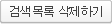

<?php
include "../../Libs/_php/rankup_basic.class.php";
$rankup_control->check_admin();

$nums=20;
$block=10;

//통합검색어를 보여주는 쿼리. 
$search_result = $rankup_control->get_search_all($nums,$block,'direct'); 
$search_list = $search_result[0];
$search_paging = $search_result[1];

//직접입력한 검색어를 보여주는 쿼리. 
$hand_list = $rankup_control->get_search_all('','','hand'); 

//메인페이지에 보여줄 검색어의 갯수 
$search_view_num = $rankup_control->get_config_field('search_view_num'); 

//직접입력인지, 검색어 입력인지. direct, hand의 값을 갖음 
$search_mode = $rankup_control->get_config_field('search_mode'); 

$rankup_control->print_admin_head();
?> 
<body leftmargin="0" marginheight="0" marginwidth="0" onload="show_hide('<?=$search_mode; ?>');" topmargin="0">
<script type="text/javascript">
<!--
function show_hide(result)	{
	if(result=='direct')	{
		show_auto.style.display='';
		show_hand.style.display='none';
	} else if(result=='hand')	{
		show_auto.style.display='none';
		show_hand.style.display='';
	}
}

function make_key(mode,num,no,url) {	//모드, 텍스트박스번호, 게시물번호, 이동주소
	var key=eval("document.key.keys"+num);
	if(key.value==key.defaultValue || !key.value)	{
		alert('수정할 값을 입력하여 주십시요');
		key.focus();
	} else {
		document.location.href="./regist.php?mode="+mode+"&key="+key.value+"&no="+no+"&url="+url;
	}
}
function toggle_A(item_ma) {

	if(item_ma.style.display =="none") item_ma.style.display = "";
	else item_ma.style.display = "none";

}
//-->
</script> 
<div class="bar"><script> titleBar("인기키워드설정", 270) </script></div>
<table width="100%" border="0" cellpadding="0" cellspacing="0"> 
<tr><td height="30"></td></tr>
<tr>
	<td align="center">
		<table width="500" border="0" cellpadding="0" cellspacing="0"> 
			<tr>
				<td height="25">
					<table width="100%" border="0" cellpadding="0" cellspacing="0"> 
						<tr>
							<td><div id="sub_title">인기키워드설정</div>&nbsp;</td>
							<td align="right"><a onClick="help.style.display=help.style.display=='none' ? 'block' : 'none';"></a></td>
						</tr>
					</table>				
				</td>
			</tr>
			<!--도움말-->
			<tr id="help" style="display:none;">
				<td>	
					<table width="100%" border="0" cellpadding="0" cellspacing="0" style="margin-bottom:7px;"> 
					<tr>
						<td class="help_bg">
							<table cellpadding="0" cellspacing="5" border="0" width="100%">							
							<tr>
								<td>사이트상단 통합검색 밑에 출력되는 인기키워드 순위입니다.</td>
							</tr>	
							<tr>
								<td>가장 많이 등록된 키워드가 기본적으로 노출됩니다.</td>
							</tr>	
							<tr>
								<td>출력갯수는 사이트메인에서 출력시킬 키워드 갯수입니다.</td>
							</tr>	
							<tr>
								<td>출력모드는 자동으로 출력시킬것인가, 수동으로 관리자가 직접 입력할 것인가를 <br>&nbsp;&nbsp;결정합니다.</td>
							</tr>	
							</table>
						</td>
					</tr>
					</table>					
				</td>
			</tr>
			<!--도움말-->
			<tr>
			<form action="./regist.php" method="post" name="show_select">
			<input name="mode" type="hidden" value="view_choice"> 
				<td>
					<table width="100%" align="center" cellpadding="7" cellspacing="0" border="1" bordercolor="#d7d7d7" class="table1 list_top">						
						<tr>
							<td width="135" height="38"  class="gray_bg">&nbsp;인기키워드 출력갯수</td>
							<td><input class="simpleform" name="search_view_num" size="6" type="text" value="<?=$search_view_num?>"> 개</td>
						</tr>
						<tr>
							<td width="135" height="38"  class="gray_bg">&nbsp;인기키워드 출력모드</td>
							<td>
								<input type="radio" name="search_mode" value="direct" 
								<?=($search_mode=='direct')?'checked':''; ?> onclick="show_hide('direct');" id="search_mode_id1"><label for="search_mode_id1">통합검색인기순</label> &nbsp; <input type="radio" name="search_mode" value="hand" 
								<?=($search_mode=='hand')?'checked':''; ?> onclick="show_hide('hand');" id="search_mode_id2"><label for="search_mode_id2">직접입력</label> 
							</td>
						</tr>						
					</table>
				</td>
			</tr>		
			<tr><td height="40" align="center"><input type="image" src="../../Libs/_images/btn_modify.gif" alt="수정"></td></tr>
			</form>
			<tr><td height="20"></td></tr>
		</table>
		<table width="500" border="0" cellpadding="0" cellspacing="0"  id="show_auto" style="display:''";> 
			<tr>
				<td height="25"><div id="sub_title">통합검색인기순으로 출력</div></td>
			</tr>
			<tr>
				<td>
					<table width="100%" align="center" cellpadding="7" cellspacing="0" border="1" bordercolor="#d7d7d7" class="table1 list_top">
						<tr align="center">
							<td class="gray_bg" >검색어</td>
							<td width="110" class="gray_bg">검색된 횟수</td>
							<td width="60" class="gray_bg">삭제</td>
						</tr>
						<?php 
						for($i=0,$j=count($search_list);$i<$j;$i++) {
							$rows = $search_list[$i]; 
						?> 
						<tr>							
							<td><?=$rows['content']; ?> </td>
							<td align="center"><?=number_format($rows['rank']); ?></td>
							<td align="center"><a href="./regist.php?mode=direct_del&no=<?=$rows['no']; ?>" onclick="return confirm('정말 삭제 하시겠습니까?');"> 삭제</a></td>
						</tr>						
						<?php 
						}
						?> 
					</table>
				</td>
				<tr>
					<td align="center" height="40">
						<table width="100%" cellpadding="0" cellspacing="0" border="0">
							<tr>
								<td width="115"><a href="./regist.php?mode=direct_all_del" onclick="return confirm('모든 검색어를 삭제하시겠습니까?')"></a></td>
								<td align="center"><?=$search_paging; ?></td>
								<td width="115" align="right"></td>							
							</tr>
						</table>	
				</td>
			</tr>		
			<tr><td height="20"></td></tr>
		</table>
		<table width="500" border="0" cellpadding="0" cellspacing="0"  id="show_hand" style="display:''"> 
			<tr><td height="25"><div id="sub_title">직접입력한 검색어출력</div></td></tr>
			<form name="key">
			<tr>
				<td>
					<table width="100%" align="center" cellpadding="7" cellspacing="0" border="1" bordercolor="#d7d7d7" class="table1 list_top">
						<tr align="center">
							<td width="50" class="gray_bg" >순서</td>
							<td class="gray_bg">내용</td>
							<td width="50" class="gray_bg">삭제</td>
						</tr>
						<?php							
						for($i=0,$j=count($hand_list);$i<$j;$i++) {
							$hand_row=$hand_list[$i];
						?> 
						<tr>
							<td align="center">
								<a href="./regist.php?mode=rank&direction=up&no=<?=$hand_row['no']; ?>&rankno=<?=$hand_row['rank']; ?>"></a>
								<a href="./regist.php?mode=rank&direction=down&no=<?=$hand_row['no']; ?>&rankno=<?=$hand_row['rank']; ?>"></a>
							</td>
							<td>
								<input class="simpleform" name="keys<?=$i?>" size="40" type="text" value="<?=$hand_row['content']?>" style="width:85%;"> 
								,'<?=$hand_row['no']?>','./search_list.php')" src="../../Libs/_images/btn_modify_s.gif" align="absmiddle" alt="수정" style="cursor:pointer"> 
							</td>
							<td align="center"><a href="./regist.php?mode=hand_del&no=<?=$hand_row['no']; ?>" onclick="return confirm('정말 삭제 하시겠습니까?');">삭제</a></td>
						</tr>
						<?php
						}
						?> 
					</table>
				</td>
			</tr>
			<tr><td height="40" align="center"><input onclick="window.open('./hand_data_insert.html','new','status=no,toolbars=no');" type="image" src="../../Libs/_images/btn_regist.gif" alt="등록" ></td></tr>
			</form>
		</table>
	</td>
</tr>
<tr><td height="50"></td></tr>
</table>

</body>
</html>
